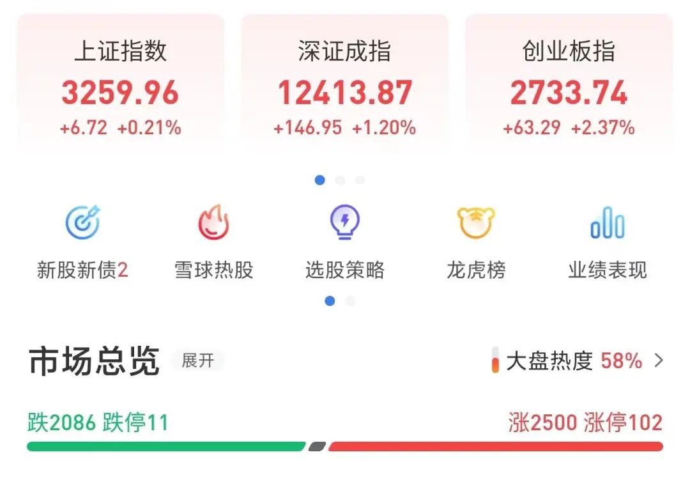
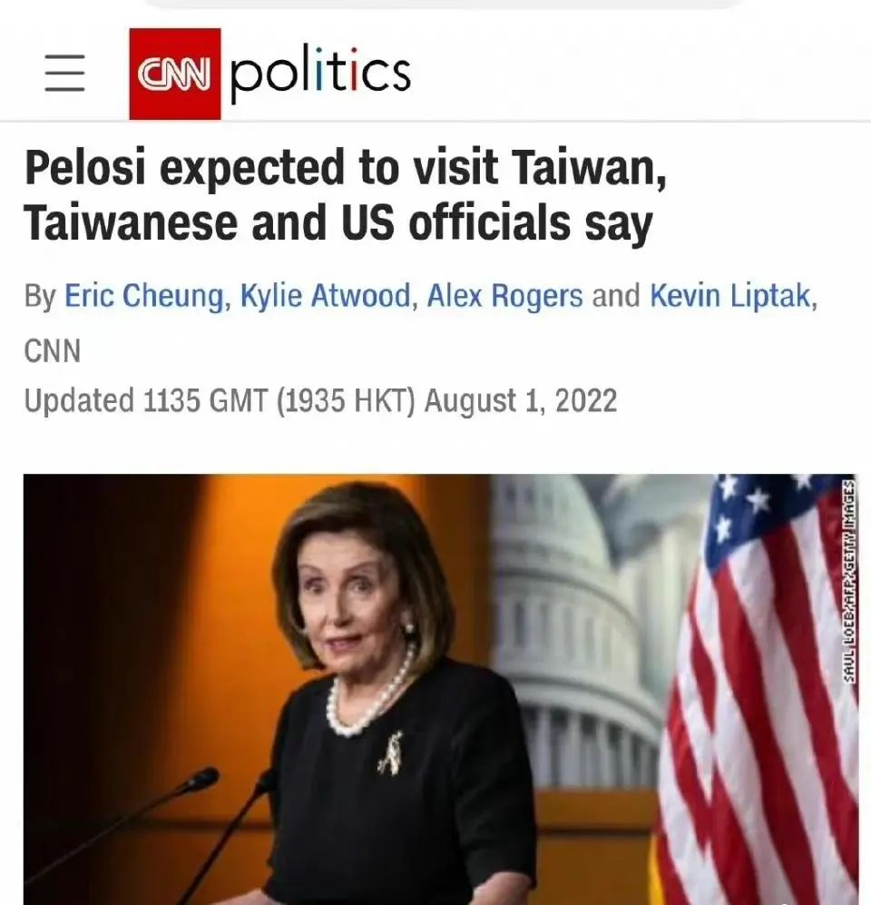
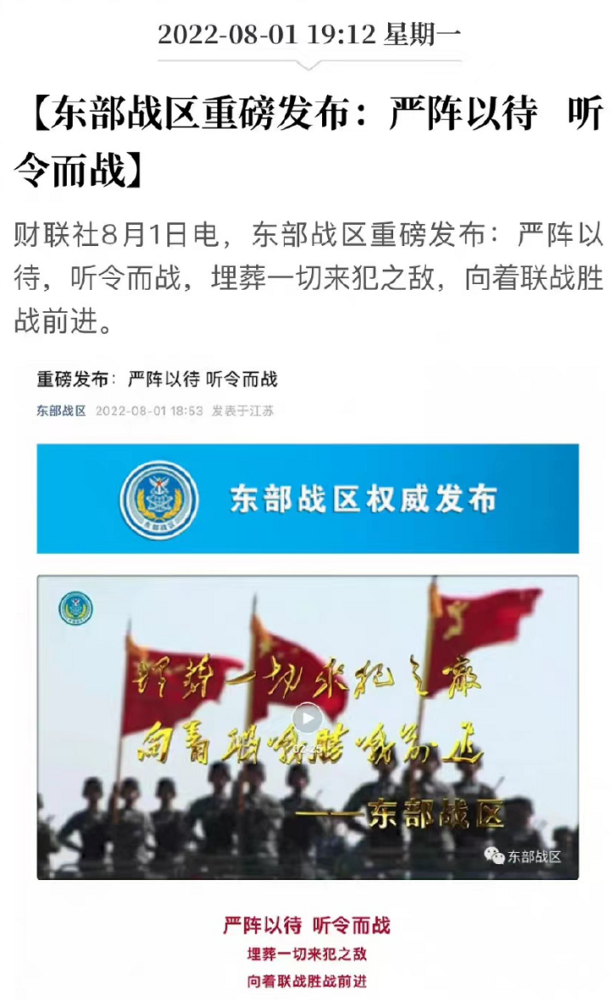

这老太太到底来不来
原创 V姐万事屋 V姐来了 2022-08-01 23:19 发表于上海
原文链接(长) 原文链接(短)
Hi, 我是V姐。
今天三大股指都能翻红，我有点意外的。

一个原因是昨天7月官方出来的PMI指数很一般，综合PMI52.6，比上月下降1.6。
制造业PMI 是49，比上月下降1.2，不及预期的50.3。
PMI就是采购经理人指数，我们前面提到过多次，是一个判断经济经营活动的先行指标，大于50说明生产在扩张，反之就在收缩。
从数据上看，企业的景气度在回落，短期经济复苏困难重重，失业率有可能进一步上升。
另外一个就是现在气氛紧张的台海问题了。
周五的下跌被看作是市场对局部可能冲突的担忧。按理来说，连俄乌战争A股都买了这么大的单，头给你跌滚掉，现在风险来到我们这边，A股不跌反涨，市场打什么算盘呢？
1、赌佩洛西不敢来。
2、让我想想。。赌我们顺利实现统一大业。。。。然后直冲5000点？
目前国内新闻是老妖婆行程没提台湾，但是CNN今天发个新闻说，美国和中国台湾省官员，都在盼望着她去送人头。

虚虚实实，双方都在做顶级的博弈。当然最终还是拳头说了算，晚上东部战区发了一个高燃视频。
喊出：严阵以待，听令而战！

佩洛西到底来不来，我方军事上会有什么程度的反应，谁都不知道。只能说对于佩洛西这把年纪来说，来了就算捞足了政治资本，本来她的亚洲之行没有太多分量，现在因为台湾事件变得全球瞩目。
对于中国来说，我们做的每个动作，都会深思熟虑自己的长远利益。
96年台海危机，97年美国众议院议长也窜访台湾。当时中美国力相差太大，我方表态只能尽量克制。
16年中美南海对峙，我方海军几乎精锐尽出，战争一触即发，但是民间宣传很少。
22年的今天，会感觉到360°的战争动员，国力今非昔比。用网民的话说，气氛都烘托到这了
假如真的见证历史，军事战后面有经济战，舆论战。大家观察一下网上那些个俄乌战争里坚定站乌克兰，谴责俄罗斯破坏和平的人，现在倒不谴责美国破坏和平了，明里暗里认为开打倒是中国的问题。
真要开打，他们第一个骂支持收复台湾的热情网民，都是你们喊打喊杀，不热爱和平，民粹 ，战狼，小粉红。某知名导演对着窜访二字阴阳怪气，多少反映了部分高贵文艺圈的真实想法。
顺美国民主清醒，逆美国民粹战狼。
话说中美之间要是出什么大事，中概互联首当其冲受影响。要是这次虚惊一场，中概就是情绪上的回调。但是丐帮兄弟什么时候能起来，没人说得准，腾讯都被砸的只能等回购回血了。
今天上海机场大涨6.2%，收盘价是54.8元，实不相瞒，本人刚刚回本（抱头痛哭.JPG）。
当初价格从88跌下来，跌40%我寻思差不多了，谁能想到这疫情没完没了跟尿不尽一样，持续了这么久。但是我对上机的看法是没有变的，东西是好东西，躺赚的模式，输时间不输钱。
今年5月以来，官方多次表态，会有序恢复和增加国际航班。6月以来，多家航司恢复更多国际航线。另外，浦东机场新增9000平免税店，翻了1.1倍，预计开业后会使得免税品类和结构大幅优化。
再有就是估值，浙商证券出了篇研报，估算还是比较合理的。假设23年国际航班恢复5成、国内恢复9成，24年完全恢复，预计22-25年，利润分别是-20，35，70，100亿。19年行业动态市盈率30倍，25年给予公司25-30倍PE，届时市值达到2500-3000亿。目前市值是1056亿，3年2.5-3倍空间，按照每年10%折现率，折3年，今年合理股价在98-117元。
我们保守一点，给2025年20倍市盈率，合理股价在104到156元，现在54.8元，3年的空间也有2-3倍。
这种赚钱模式清晰，输时间不输钱的公司，拿着暂时亏了也不会很担心，同类的还有长江电力，长江水滚滚流，它就能赚钱，分红不错，看年线的话，也走得很稳。
* * *
上周末出差杭州，去玩了一个密室很不错，全程75分钟，不需要解谜，是NPC带着你走剧情的。中间需要你配合完成一些任务，4-6个人一起玩，剧本过关，声光电配合到尾，演员都是科班出身，非常专业，说是微恐，我跟另外2个小姐姐停尸房里抱头蹲在地上尖叫。。。
个人感受这种相对解谜类，会更好玩一些，因为解谜的经常需要求助或者时间不够，体验感就打折扣了。这类应该能够吸引不少密室爱好者，因为我去的当天就碰到有好几个朋友刚刷完一场，就要加入另外一个剧本继续玩。
话说我为啥去杭州出差还要玩这个呢？因为上海到现在室内娱乐还没有开放，今天看了一眼我的北京健康宝，宝，你怎么还在弹窗